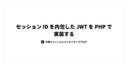
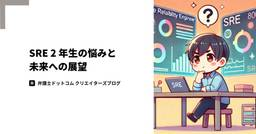
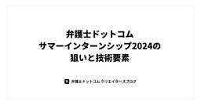
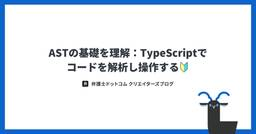
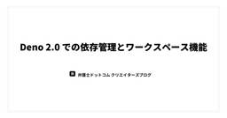
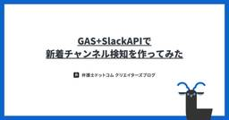

弁護士ドットコム株式会社 Creators’ blog
https://creators.bengo4.com/
弁護士ドットコムがエンジニア・デザイナーのサービス開発事例やデザイン活動を発信する公式ブログです。
フィード

セッション ID を内包した JWT を PHP で実装する 20
20
弁護士ドットコム株式会社 Creators’ blog
この記事は弁護士ドットコム Advent Calendar 2024 の 21 日目の記事です。 はじめに リーガルブレイン開発室の tsuchiya です。 先日、セッション ID を JWT に内包するという記事を読みました。 "JWT=ステートレス"から一歩踏み出すための考え方 上記記事では、 セッション ID を内包した JWT を活用する ことについて紹介しています。 JWT の性質を最大限活用したもので、非常に共感できる内容でした。 本記事では上記記事をうけて、セッション ID を内包した JWT をセッション Cookie として使用する処理を PHP で実装してみたので、その内…
14時間前
UIコンポーネントライブラリ「delta-wing-ui」の開発物語 1
弁護士ドットコム株式会社 Creators’ blog
UIコンポーネントライブラリ「delta-wing-ui」の開発物語 この記事は、弁護士ドットコム Advent Calendar 2024 の 19 日目の記事です。 はじめまして。弁護士ドットコム株式会社で『クラウドサイン』という契約マネジメントプラットフォームのフロントエンドを担当しています、神戸と言います。 今年の Vue Fes Japan では、弊社エンジニアが登壇し、 多くの方に社内で開発している UI コンポーネントライブラリの取り組みを知っていただくことができました。 ライブラリはバーチャルチーム（特定の目的に向けて、有志メンバーが期間限定で組成する小規模チーム）で開発してお…
3日前

SRE 2 年生の悩みと未来への展望 1
弁護士ドットコム株式会社 Creators’ blog
この記事は弁護士ドットコム Advent Calendar 2024の 18 日目の記事です。 前日は @takky さんの「サマーインターンシップ2024」でした。 弁護士ドットコムは新卒採用を始めました！ 学生のみなさんが入社後のイメージを持っていただけるような、実践的なインターンシップを行っていて素晴らしい取り組みだと思いました。 そして、私自身も「貢献していければいいな」と思っています。 いろんな世代の方が、いきいきと仕事をしている職場っていいですよね。 はじめに 今回の内容は 2 年目で感じている悩み SREとして会社に貢献する方法 結局「信頼性」の確保！ 具体的な対応 コストも一緒…
4日前

弁護士ドットコムサマーインターンシップ2024の狙いと技術要素
弁護士ドットコム株式会社 Creators’ blog
この記事は弁護士ドットコム Advent Calendar 2024の 17 日目の記事です。 クラウドサインのサーバーサイドエンジニアをやっている吉田です。 また全社のエンジニアリングオフィスとしてインターンシップや新卒研修と行った採用・育成面を担当しています。 もう年末まであと 2 週間というところですが、2024 年の 8 月と 9 月には会社として 2 回目の、 エンジニアを目指す学生向けに本格的なインターンシップを行いました。 今年も開催期間は 1 週間ずつでたくさんの学生が参加してくれました。 昨年(2023年)の様子はこちら以下の記事からご覧ください。 creators.beng…
5日前

AST の基礎を理解：TypeScript でコードを解析し操作する🔰 1
弁護士ドットコム株式会社 Creators’ blog
この記事は、弁護士ドットコム Advent Calendar 2024 の 16 日目の記事です。 クラウドサイン事業本部のフロントエンドエンジニアの辻@t0daaayです。 最近カンファレンスや勉強会で AST 関連の話を見聞きすることが多い中、実際に AST を触ったことがなかったため学びました。 本記事では、イチから TypeScript の AST の概要の理解をし、実際の AST の操作やそれを簡単に行うためのライブラリを使った内容をまとめています。 AST とは AST（Abstract Syntax Tree : 抽象構文木）はソースコードをパース（解析）し、木構造で表現したもの…
6日前

Deno 2.0 の依存管理アップデートとモノレポワークスペースの実践 1
弁護士ドットコム株式会社 Creators’ blog
この記事は、 弁護士ドットコム Advent Calendar 2024 の 15 日目の記事です。 弁護士ドットコムで Web エンジニア業務をしている @koukibuu3 です。 2024/10/09、Deno のメジャーアップデートが行われ 2.0 となりました。 4 years after Deno 1.0, the next generation of JavaScript is ready for production at scale.Deno 2 is out today:🐢 Fully backwards compatible with Node and npm 📦 Pac…
7日前

GAS+SlackAPIで新着チャンネル検知を作ってみた 1
弁護士ドットコム株式会社 Creators’ blog
この記事は、弁護士ドットコム Advent Calendar 2024 の14日目の記事です。 クラウドサインのフロントエンドエンジニアとして入社して5年の @happylifetaka です。 免責：本記事に記載しているコードはアドベントカレンダー用に作成したものであり、実際に使用しているコードとは異なります。使用する際は、必要に応じて修正していただいたうえで、自己責任でご利用ください。 概要 当社では、Slack をチャットツールとして使用しており、社員が自由にチャンネルを作成し、ジャンルごとの雑談や日報を共有しています。 しかし、新しいチャンネルが作られたことを社内に広く知らせたい場合、…
8日前

S3 ブロックパブリックアクセス（バケット設定）の再勉強
弁護士ドットコム株式会社 Creators’ blog
この記事は、弁護士ドットコム株式会社の Advent Calendar 2024 の 13 日目の記事です。 皆さん、こんにちは。弁護士ドットコム、技術戦略本部・ SRE 室のテイです。今回は、S3 のブロックパブリックアクセスについて十分に理解できていないと感じたため、Security Hub で S3 のブロックパブリックアクセスに関する修復作業を行う際に自信が持てませんでした。そこで、各パターンを実際に試しながら、S3 のブロックパブリックアクセスについてあらためて勉強しました。 ブロックパブリックアクセスについて S3 へアクセスしてみる オブジェクト URL を使ってブラウザでアクセ…
9日前
クラウドサインの開発チームに加わって最初の 1 年を振り返る
弁護士ドットコム株式会社 Creators’ blog
この記事は弁護士ドットコム Advent Calendar 2024 12日目の記事です！ クラウドサインのフロントエンドエンジニアのツノ(𝕏@2nofa11)です。2024 年 3 月に入社し、12 月で 10 ヶ月が経ちます。 少し早いですが、クラウドサインのエンジニアとしての 1 年を YWT（やったこと、わかったこと、次にやること） 手法で振り返ってみます。 ちなみに、入社 1 ヶ月後の振り返りについては過去に記事を執筆していますので、よろしければ合わせてご覧ください。 creators.bengo4.com 2024 年の振り返り 転職は今回で 2 回目ですが、クラウドサインでの 1…
10日前
エンジニアリーダーとしての挑戦と失敗。あるいは同じ景色を見るまでの軌跡
弁護士ドットコム株式会社 Creators’ blog
この記事は、弁護士ドットコム Advent Calendar 2024 の 11 日目の記事です。 クラウドサインでエンジニアをしている@teitei_tkです。好きなリーダーシップ論は Fate/Zero の聖杯問答です。 今年に入りエンジニアチームのリーダーを任せてもらったので、挑戦し失敗したことを振り返ります。 エンジニアリーダーをやって初めにやったこと チームを一緒に作ってくれる人を見つける エンジニアリーダーとしてやったこと 毎週の 1on1 スクラムチーム運営 寄り添うこと 頻繁な振り返り文化の醸成 エンジニアリーダーとして気をつけたこと 迅速なポジティブ・ネガティブフィードバック…
11日前
4月からスクラムマスターになったのでふりかえる
弁護士ドットコム株式会社 Creators’ blog
この記事は、弁護士ドットコム Advent Calendar 2024 の 10 日目の記事です。 こんにちは、クラウドサインの機能開発で主にバックエンドのコードを書いている山下です。 クラウドサインでは機能開発を行うチームが複数あります。 私はそのうちの一つで今年の4月からスクラムマスターと開発ロールを兼任することになりました。 本記事では、はじめてスクラムマスターを務めるにあたって実際に取り組んで良かったことや学びなどを記載します。 少しでも参考になれば幸いです！ スクラムマスターになった背景・チームの状況 やって良かったこと チームメンバーとスクラム本の輪読会を行う メンバーと話す場を設…
12日前
protovalidate 活用事例とその効果
弁護士ドットコム株式会社 Creators’ blog
この記事は弁護士ドットコム Advent Calendar 2024の 9 日目の記事です。 クラウドサインのエンジニアの榎戸です。今年は新規事業をやったりで刺激的な 1 年でした。 そんな新規事業ですが、頭を使わないお絵描きをしてみんなでアイスブレイクする時間が癒しでした。この記事のアイキャッチはそのお絵描きから生まれたものです。「protovalidate の記事書くからお絵描きイラスト募集してます」と声をかけたらアイスブレイクで描いていただきました。左上の山を登る人から、バリデーションチェックの大変さを感じさせられますね（？） 今回は、その新規事業で採用した protovalidate …
13日前
年末なのでコードの大掃除をしよう
弁護士ドットコム株式会社 Creators’ blog
この記事は弁護士ドットコム Advent Calendar 2024の 8 日目の記事です。 クラウドサイン事業本部でエンジニアをやっている田邉です。 みなさんの js、ts プロジェクトには、なぜ export しているのかわからないコードや、なんのためにインストールしているのかわからないモジュールはありませんか？ それらが不要だとしたらこの年末に大掃除するチャンスです！ ※ 本記事の内容は既存コードに対する大幅な変更が発生する可能性があります。タイトルには反しますが、年末に実施する場合は十分に注意して実行してください。 私の関わっている事業のプロジェクトでは Next.js を利用している…
14日前
アクセシブルなドロップダウンメニューの構成
弁護士ドットコム株式会社 Creators’ blog
この記事は、弁護士ドットコム Advent Calendar 2024 の 2 日目の記事です。 こんにちは、弁護士ドットコムでクラウドサインというサービスのフロントエンドを実装している @RINYU_DRVO と申します。車とギターが大好きです。 昨年の Advent Calender は Go html/templateで書くHTMLメールのハマりどころと対処法 を投稿しました。 今年のテーマは「ドロップダウンメニュー」「アクセシビリティ」です。 この記事で伝えたいこと 背景 改修対象 構成の全体像 解説 role 属性 menu menuitem none aria 属性 aria-la…
19日前
2024年技術発信活動の振り返り
弁護士ドットコム株式会社 Creators’ blog
この記事は弁護士ドットコム Advent Calendar 2024 1日目の記事です！ みなさん、こんにちは！2024年12月突入ということもでアドベントカレンダーも突入しました！ 早速ですが、弁護士ドットコムの技術広報を担っております sakutaro(x@saku_238)から、2024年の技術発信活動を振り返りいたします。 技術カンファレンスの協賛・登壇 2024年も、たくさんの技術カンファレンスへ協賛する機会をいただきました。登壇させていただいたものもあれば、ロゴスポンサーとして名を連ねる形での協賛もありました。それぞれの場で、最新技術や現場の課題について知見を共有し合うことで、新た…
21日前
サマーインターンシップ：2024年メンター生 編
弁護士ドットコム株式会社 Creators’ blog
はじめに 25年新卒内定者アルバイトの千木良です。現在は東京国際工科専門職大学4年生で、2025年4月に弁護士ドットコムに入社予定です。 これは、昨年2023年から始まったサマーインターンシップについてまとめた記事になります。 私は、昨年はインターン生として参加し、今年はインターンシップを運営する側として参加しました。 インターン生時代に体験したブログはこちらにまとめています。 creators.bengo4.com この記事では、メンター生としての感想と運営としての感想を書きます。 どちらのインターンシップも貴重な経験だったので、２つの視点から弁護士ドットコムのインターンシップについて知って…
23日前
サマーインターンシップ体験：2023年インターン生編
弁護士ドットコム株式会社 Creators’ blog
はじめに 25年新卒内定者アルバイトをしていた千木良です。現在は東京国際工科専門職大学4年生で、2025年4月に弁護士ドットコムに入社予定です。 これは、昨年2023年サマーインターンシップについてまとめた記事になります。 昨年はインターン生として参加し、今年はインターンシップを運営する側として参加しました。この記事では、2023年に参加したインターン生としての感想を書きます。 インターンシップの概要 今年のインターンシップのカリキュラムは以下を行いました。 Webシステムの開発 現役エンジニアによるキャリアの話 エンジニア勉強会 懇親会 開催期間は１週間になっており基本的にはWebアプリケー…
25日前
イベント開催レポート：「出張！俺の電子契約」〜クラウドサインをアクセシビリティチェック〜
弁護士ドットコム株式会社 Creators’ blog
2024年9月11日(水) SmartHRさんと開催した弁護士ドットコム×SmartHR「出張！俺の電子契約」〜クラウドサインのアクセシビリティチェック〜」のイベントレポートです。
2ヶ月前
ゼロダウンタイムで Amazon EC2 で稼働している nginx を AWS Fargate に移行した
弁護士ドットコム株式会社 Creators’ blog
こんにちは。弁護士ドットコム クラウドサイン事業本部で SRE をしています、大内と申します。 クラウドサイン事業本部の SRE ではサービスの可用性、信頼性の向上や開発の高速化、省力化を目指した開発を日々行っています。 クラウドサインは 2024 年 10 月で 10 年目のサービスとなりました。 裏ではさまざまなアプリケーション（定期実行バッチ、常駐バッチ、内部 API サーバーなど）が稼働し、相互に連携してサービスを提供しているのですが、中には非常に古くから稼働しているものも存在します。 今回お話する nginx もその 1 つです。 クラウドサインの裏で稼働するアプリケーションのほとん…
2ヶ月前
弁護士ドットコムはVue Fes Japan 2024にスポンサー＆登壇します！
弁護士ドットコム株式会社 Creators’ blog
弁護士ドットコム株式会社 技術広報のsakutaroです！ 2024年10月19日（土）に開催される「Vue Fes Japan 2024」に、弁護士ドットコムはプラチナスポンサーとして協賛します。 今回のブログでは、セッション内容やスポンサーブースをご紹介します！ Vue Fes Japan 2024 とは Vue.js 日本最大級のカンファレンス「Vue Fes Japan」が、2024年も開催されます！ 2018年にスタートしたこのイベントは、Vue.js コミュニティが一緒に学び、楽しみ、そして成長できる場として誕生しました。 前回の2023年は、5年ぶりのオフライン開催で600名近く…
2ヶ月前
MockServiceWorker（MSW） を使った高速開発のための運用事例
弁護士ドットコム株式会社 Creators’ blog
クラウドサイン事業本部の田邉(𝕏@s_tanabe_)です。 フロントエンドの開発に携わっているみなさんは、バックエンドや BFF(Backends For Frontends) の開発を待たずにフロントエンドの開発に取りかかりたいと考えたことはありませんか？ これが実現できると フロントエンドでの不確定性を早いうちに潰しておける バックエンドと並行してフロントの開発を進めることができるようになる など開発の高速化につながるメリットを享受することができます。 そしてこれを実現することができるようになるツールこそが Mock Service Worker です。 以降では Mock Servic…
2ヶ月前
AWS COST CUT FIGHT 回答を作ってみました
弁護士ドットコム株式会社 Creators’ blog
概要 10月5日(土)に開催されたYAPC::Hakodate 2024 で「AWS COST CUT FIGHT」という株式会社DELTA様のイベントがありました*1。 その中で弊社SREが2000$越えのコスト削減を達成しました。 むずかった😇月間$ 2,150のAWSコスト削減に成功しました！あなたはいくら削減できる！？コスト削減クイズにチャレンジ！presented by 株式会社DELTA https://t.co/CQyjt4khLM #yapcjapan— nakamura (@__namakura) 2024年10月5日 と思ったらついに2000ドルの壁を超えた猛者が！#yap…
2ヶ月前
ボタンをaタグで作るな高校校歌
弁護士ドットコム株式会社 Creators’ blog
まずはこちらをお聞きください。 技術的解説: ボタンを a 要素で作るな a 要素は URL などへのリンクをつくるためのもので、button 要素はなんらかの処理を起動するボタンをつくるためのものです。 配置されるものがリンクなら a 要素で実装し、ボタンなら button 要素で実装すべきです。 これに違反すると、意図しない動作や、アクセシビリティ上の問題が発生します。 これは MDN でも詳しく説明されています。 onclick イベント -- \<a>: アンカー要素 - HTML: ハイパーテキストマークアップ言語 | MDN よく見られる誤った使い方として、擬似的なボタンを作成する…
3ヶ月前
GraphRAG を使ってみる
弁護士ドットコム株式会社 Creators’ blog
こんにちは。弁護士ドットコム株式会社リーガルブレイン開発室の井出です。 リーガルブレイン開発室では生成 AI などの技術を利用して企業法務や弁護士の課題解決のためのサービスを開発しております。 今回は弊社で研究を進めている GraphRAG がどういったものか、環境を構築し、実際にサンプルデータを処理するまでの手順をご紹介します。 GraphRAG を研究することになった背景 グラフについて Microsoft GraphRAG Microsoft GraphRAG 構築準備 検証した動作環境 Python インストール gcc インストール Rust インストール Azure OpenAI …
3ヶ月前
Vue 3.5 の新機能・改善点まとめ
弁護士ドットコム株式会社 Creators’ blog
クラウドサインのフロントエンドエンジニアの辻@t0daaayです。 2024 年 9 月 1 日に Vue 3.5 のリリースが発表されました。 https://blog.vuejs.org/posts/vue-3-5 このブログでは、このリリースノートを読みリリースされた内容を実際に動かしてみたり、さらに調査した内容についてまとめました。 Reactive Props Destructure の安定化 https://vuejs.org/guide/extras/reactivity-transform.html#reactive-props-destructure props が分割代入の…
3ヶ月前
クラウドネイティブ時代のプロキシTraefikのDocker入門
弁護士ドットコム株式会社 Creators’ blog
こんにちは。税理士ドットコム事業部の @komtaki です。 先日、税理士ドットコムの local 環境に「クラウドネイティブ時代のリバースプロキシ」Traefikを導入しました。プロキシサーバーの候補として最初に思いついたのは nginx でしたが、最終的には、設定ファイル不要で compose.yml だけで完結する Traefik に決めました。 そこで本記事では、Docker を前提としたコンテナのラベルでの設定方法など、導入の過程で調べた Traefik を使うために必要な情報をまとめています。 なお Traefik にはロードバランサーの機能もあるのですが、ここではプロキシの機能…
3ヶ月前
新卒が必読書「Team Geek」から学んだ、チームづくりのためのガイド
弁護士ドットコム株式会社 Creators’ blog
こんにちは2025年内定者の千木良です。現在は東京国際工科専門職大学4年生で、２０２５年４月に弁護士ドットコムに入社予定です。 ２本目の記事では、チーム開発では欠かせない思考を学べる「Team Geek」について大切だと思った点をまとめました。 学生と社会人の大きな違いは、チーム開発を行うかどうかだと思います。本書を読むと、チーム開発を円滑に進めるための知識が身につくためぜひご覧ください！ この本が必読書である必要性 Team Geekとは こんな人におすすめ Team Geekの重要ポイント チーム開発における重要な考え方 素晴らしいチーム文化を作る 文化とは 文化を気にかける必要性 外発的…
4ヶ月前
新卒が必読書「リーダブルコード」から学んだ、読みやすいコードを書くための基本ルール
弁護士ドットコム株式会社 Creators’ blog
こんにちは、2025年内定者の千木良です。現在は東京国際工科専門職大学4年生で、２０２５年４月に弁護士ドットコムに入社予定です。 この記事では、弁護士ドットコムの必読書である「リーダブルコード」を読んだため、学生エンジニア視点で重要だと思った点をまとめた記事になります。 ボリュームがある記事になってしまいましたが、この記事を読むだけでエンジニアとして一回り成長できる内容になりましたのでぜひ最後まで見てもらいたいです！ この本が必読書である必要性 リーダブルコードとは？ こんな人におすすめ 本書の重要ポイント 名前の命名を意識しよう 名前に情報を埋め込む 誤解されない名前にする コメントする際は…
4ヶ月前
なぜボタンは button 要素で作るべきなのか、div 要素をボタンにすることを通して考える
弁護士ドットコム株式会社 Creators’ blog
この記事を読むとわかること なぜボタンを button 要素で作るべきなのか、その理由 どーーーーーしてもボタンを別の要素で作らなければいけないとき、何をすればいいか 答え button 要素を使ったときに得られる標準動作を捨ててまで得られるメリットがないからです。 HTML の標準に従って、適切な要素を用いて開発することが重要です。 そもそも HTML (HyperText Markup Language) は、ドキュメントの構造や意味を印付けして表すためのマークアップ言語です。 ボタンにはボタンであるという印、つまり button 要素を用いるのが理にかなっています。 button 要素の…
4ヶ月前